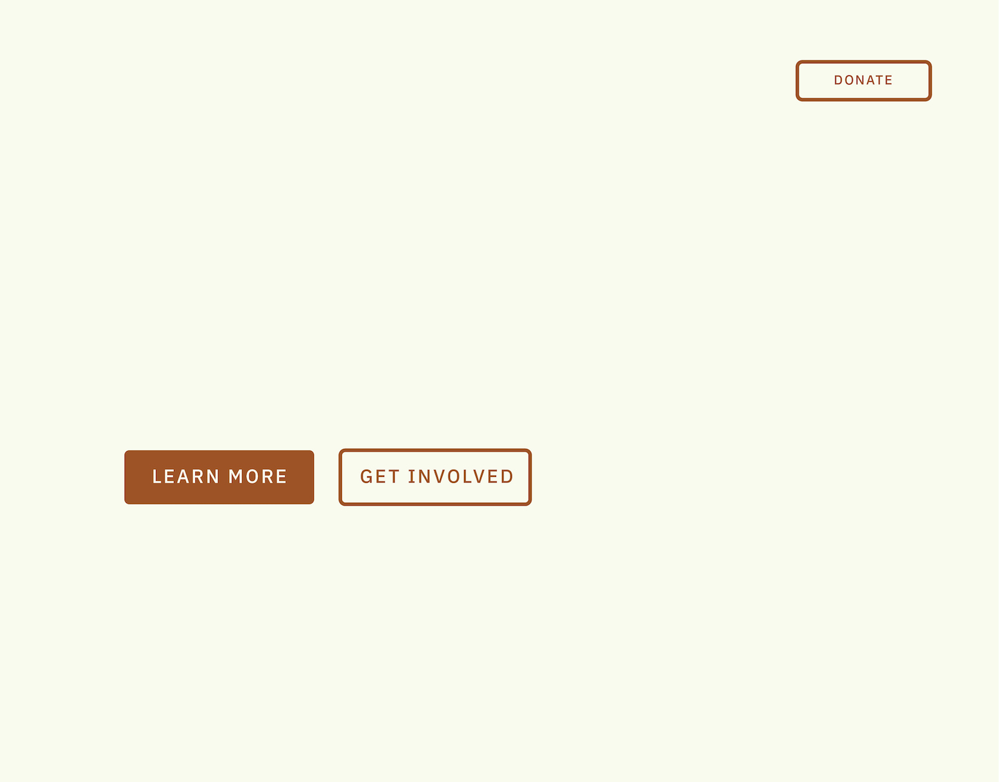
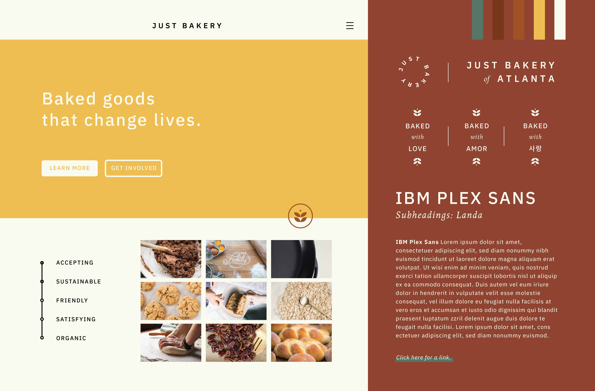

Solution
Nullam posuere erat vel placerat rutrum. Praesent ac consectetur dui, et congue quam. Donec aliquam lacinia condimentum.
Call to Action

The main purpose of the website is to share what Just Bakery does and allow all audiences to learn more about the organization so they will want to get involved. A call to action of “Learn More” will engage all audiences to understand Just Bakery’s mission better.
“Get Involved” is a secondary call to action because the purpose of the call to action of “Learn More” is to lead users to want to get involved. These two call to actions will focus on the mission and purpose of Just Bakery and how this in turn impacts the community of Atlanta.
“Donate” will also be used as a call to action in the menu. While this button will not be used as a primary call to action on the website, it will still call attention to users so that they can donate. The goal of “Learn More” and “Get Involved” will hopefully lead people to donate to Just Bakery.
Style Tile

After research and brainstorming, I created the style tile in order to capture how the website needed to be designed.
I started by using the adjectives accepting, sustainable, friendly, and satisfying to guide the beginning of my design process. These words came directly from the interview and research process as well as adjectives that I felt best captured not only their business model but their food as well.
I chose IBM Plex Sans because of how clean and readable it is to help express cultural inclusivity. However, compared to other sans-serif typefaces, this typeface still gives off a sense of warmth because of the use of some slabs on letters like “J” and “I”. I chose Landa because it was created for designs in nature and had a more hand-done feel to the silhouettes of the type yet it still helped contrast the clean look of IBM Plex Sans. However, together, this typeface palette can represent the adjectives.
The colors and imagery needed to exude the warmth and welcoming feel Just Bakery gives off. Because of this, I went with warmer colors like deeper oranges and reds to use as the main colors to develop and high-quality images to help tell the brand’s story.
I also created additional brand collateral for the company. In the interview with the director of Just Bakery, Leah Lonsbury talked about the importance of their social media presence for their company. Because of this, I decided to create icons that could be used not only on their website but also for their profile pictures. These icons could even be used for promotional aspects like t-shirts, embroidered on hats, and print material. The “Baked with Love” appears in the top 3 languages spoken in Atlanta and also could be used on not only their website but for promotional material too.